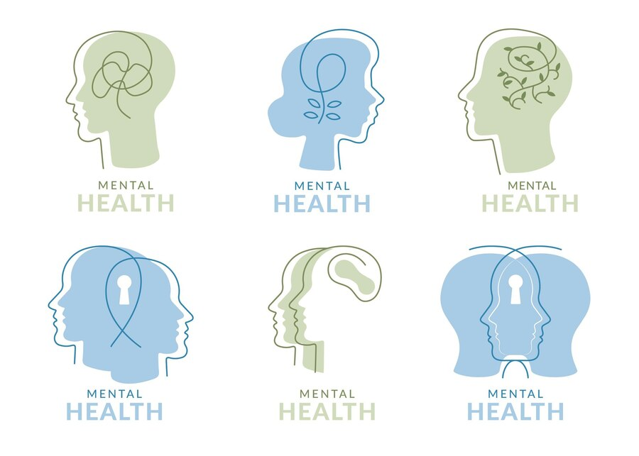

Cuide da sua saúde emocional com um profissional qualificado

Imagem por Freepik
Dr. João Silva
Psicólogo Clínico | CRP 12345
Com mais de 10 anos de experiência, Dr. João Silva é especializado em terapia cognitivo-comportamental, ajudando pacientes a superar desafios emocionais e alcançar equilíbrio mental. Ele acredita em um atendimento humanizado e acolhedor, promovendo o bem-estar de cada indivíduo.
Somos especializados em oferecer suporte psicológico para ajudar você a enfrentar os desafios da vida com mais equilíbrio e bem-estar.
Atendimento personalizado para suas necessidades emocionais.
Fortaleça seu relacionamento com sessões focadas em comunicação e empatia.
Descubra sua vocação e alcance seus objetivos de carreira.
Foco total no seu bem-estar emocional.
Espaço confortável e seguro para suas sessões.
Horários adaptados à sua rotina.
Preencha o formulário abaixo e agende sua consulta: